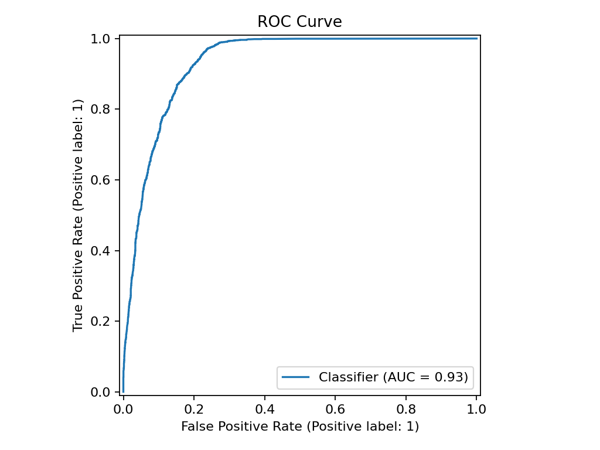
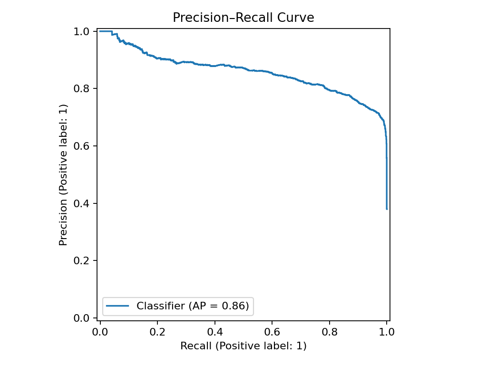
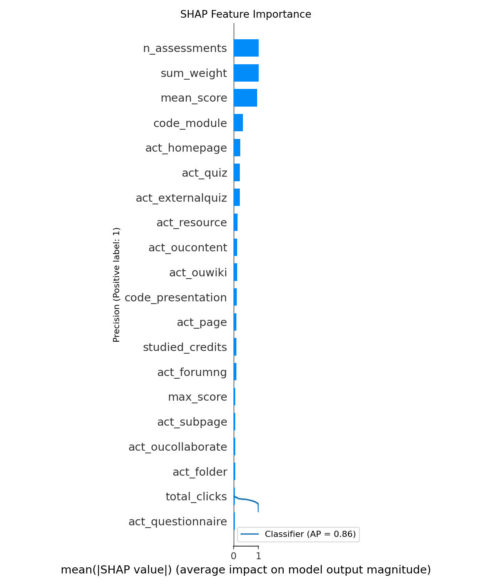
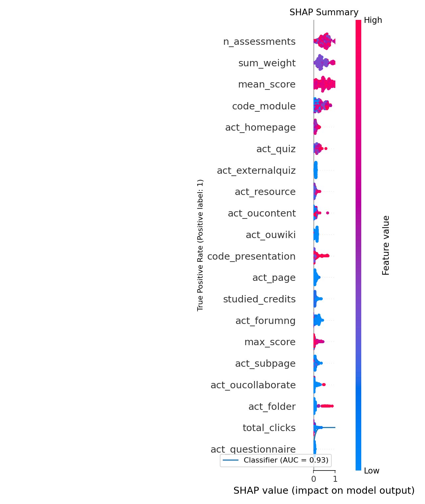

Model Evaluation
- AUC (ROC): 0.929
- Average Precision (PR-AUC): 0.859
- Accuracy / F1: 0.852 / 0.821
- Brier: 0.1007
Figures
 
 
Recommendations (sample)
id_student p_vv p_ar p_sg ready streak rec_1 rec_2 rec_3
3439 0.0086 0.0086 0.0086 False 1 B1: Explain topic aloud (rubber-duck) for 3 minutes R1: Read module page & write 3 bullet reflections S1: Follow step-by-step checklist for this unit
31652 0.0007 0.0007 0.0007 False 1 B1: Explain topic aloud (rubber-duck) for 3 minutes R1: Read module page & write 3 bullet reflections S1: Follow step-by-step checklist for this unit
30561 0.0007 0.0007 0.0007 False 1 B1: Explain topic aloud (rubber-duck) for 3 minutes R1: Read module page & write 3 bullet reflections S1: Follow step-by-step checklist for this unit
28108 0.0057 0.0057 0.0057 False 1 B1: Explain topic aloud (rubber-duck) for 3 minutes R1: Read module page & write 3 bullet reflections S1: Follow step-by-step checklist for this unit
29814 0.0053 0.0053 0.0053 False 1 B1: Explain topic aloud (rubber-duck) for 3 minutes R1: Read module page & write 3 bullet reflections S1: Follow step-by-step checklist for this unit
14572 0.0020 0.0020 0.0020 False 1 B1: Explain topic aloud (rubber-duck) for 3 minutes R1: Read module page & write 3 bullet reflections S1: Follow step-by-step checklist for this unit
9273 0.0090 0.0090 0.0090 False 1 B1: Explain topic aloud (rubber-duck) for 3 minutes R1: Read module page & write 3 bullet reflections S1: Follow step-by-step checklist for this unit
22775 0.0087 0.0087 0.0087 False 1 B1: Explain topic aloud (rubber-duck) for 3 minutes R1: Read module page & write 3 bullet reflections S1: Follow step-by-step checklist for this unit
6323 0.0087 0.0087 0.0087 False 1 B1: Explain topic aloud (rubber-duck) for 3 minutes R1: Read module page & write 3 bullet reflections S1: Follow step-by-step checklist for this unit
13990 0.0082 0.0082 0.0082 False 1 B1: Explain topic aloud (rubber-duck) for 3 minutes R1: Read module page & write 3 bullet reflections S1: Follow step-by-step checklist for this unit
10239 0.0082 0.0082 0.0082 False 1 B1: Explain topic aloud (rubber-duck) for 3 minutes R1: Read module page & write 3 bullet reflections S1: Follow step-by-step checklist for this unit
26738 0.0082 0.0082 0.0082 False 1 B1: Explain topic aloud (rubber-duck) for 3 minutes R1: Read module page & write 3 bullet reflections S1: Follow step-by-step checklist for this unit
23427 0.0090 0.0090 0.0090 False 1 B1: Explain topic aloud (rubber-duck) for 3 minutes R1: Read module page & write 3 bullet reflections S1: Follow step-by-step checklist for this unit
31387 0.0166 0.0166 0.0166 False 1 B1: Explain topic aloud (rubber-duck) for 3 minutes R1: Read module page & write 3 bullet reflections S1: Follow step-by-step checklist for this unit
32330 0.0007 0.0007 0.0007 False 1 B1: Explain topic aloud (rubber-duck) for 3 minutes R1: Read module page & write 3 bullet reflections S1: Follow step-by-step checklist for this unit